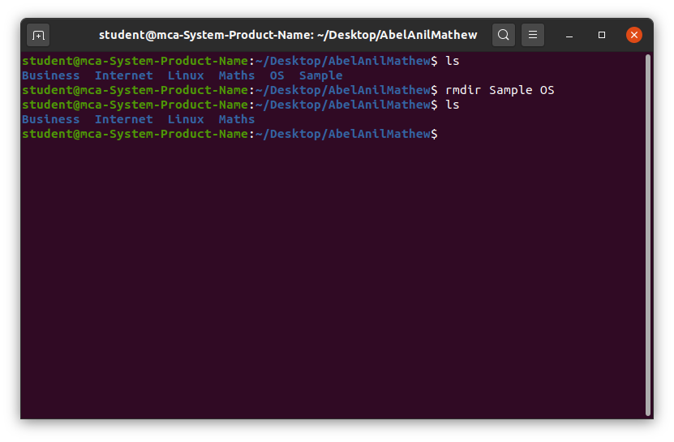

The ‘rmdir’ command is a specialized tool designed specifically for removing empty directories, helping to maintain a clean file system and avoid accidental data loss.
- The main purpose of rmdir is to help users clean up and manage their file system by removing directories that are no longer needed, but only if they are empty.
rmdir [option]... [directory]...‘rmdir’ command is similar to the rm command, but rmdir only removes empty directories. So first, we will use the help flag to list down all the available options for the rmdir command:
rmdir --helpLet’s start the examples with a section with the simple rmdir command to remove multiple directories, and here is the basic syntax:
rmdir mydir1 mydir2 mydir3 .....Here we will remove OS and Sample directories through the following command:
If you want the terminal to display a message after removing the directory, you can use the -v option with the rmdir command:
rmdir -v dir1 dir2 dir3The rmdir command is an essential tool in Linux for removing empty directories. While it is a straightforward command, it plays a crucial role in maintaining a clean and organized file system. Understanding its syntax and limitations, such as the requirement for directories to be empty, helps users avoid errors and unintended data loss. By mastering the use of rmdir, users can efficiently manage directories and ensure their systems remain clutter-free. This command is particularly useful for administrators and users who need to remove redundant directories as part of regular system maintenance.
"Education is the most powerful weapon which you can use to change the world."